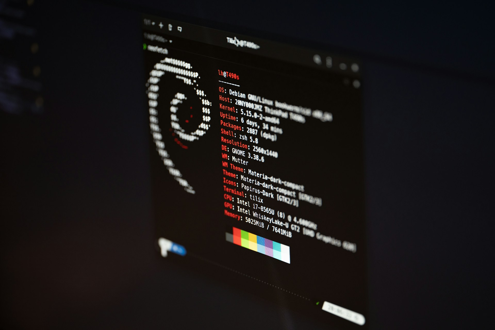

Lewis Lanting
Systeem- en netwerkbeheerder
Als gedreven IT-consultant richt ik mij voornamelijk op systeem- en netwerkbeheer, met een sterke focus op open-source software. Mijn passie ligt in het optimaliseren van processen door middel van scripting en automatisering. Hoewel ik een Linux-enthousiast ben, ben ik niet beperkt tot dit ecosysteem. Mijn expertise strekt zich uit tot diverse domeinen, waaronder cloud computing, DevOps en Windows Server. Ik ben vastbesloten mijn vaardigheden verder te ontwikkelen en ben altijd op zoek naar nieuwe uitdagingen binnen de IT-infrastructuurwereld om mijn kennis en ervaring uit te breiden.
Mijn expertise
Systeembeheer
Ik heb diepgaande kennis van het opzetten, configureren en onderhouden van verschillende soorten servers, zoals web-, database- en bestandsservers. Dit omvat het installeren van besturingssystemen, het afstemmen van serverprestaties, het implementeren van beveiligingsmaatregelen en het automatiseren van taken via scripts en tools. Daarnaast ben ik ervaren in het beheren van netwerkprotocollen, virtualisatieplatformen en het monitoren van serverstatus om de uptime en betrouwbaarheid van systemen te garanderen. Of het nu gaat om een kleine bedrijfsserver of een complexe, schaalbare omgeving, ik zorg ervoor dat alles soepel en veilig draait.
Netwerkbeheer

Mijn expertise omvat het configureren van routers, switches en firewals, het opzetten van VPN's en het beheren van IP-adressering en subnetten. Ik ben goed thuis in het monitoren van netwerkprestaties, het oplossen van netwerkproblemen en het implementeren van beveiliggingsmaatregelen om de integriteit van het netwerk te waarborgen. Daarnaast heb ik ervaring met het beheren van draadloze netwerken, het optimaliseren van netwerkverkeer en het zorgen voor een stabiele en betrouwbare verbinding, zowel on-premises als in cloudomgevingen. Mijn aanpak is gericht op het bieden van veilige, efficiënte en schaalbare netwerkoplossingen die de bedrijfsvoering ondersteunen.
Automatisering

Met een sterke focus op automatisering heb ik ruime ervaring in het implementeren van geavanceerde automatiseringsoplossingen met tools zoals Python, Ansible en Terraform. Ik ben bedreven in het schrijven van scripts en het ontwikkelen van workflows die repetitieve taken stroomlijnenm zoals het automatisch uitrollen van softwarem het beheren van configuraties en het opzetten van infrastructuren. Met Python kan ik maatwerkoplossingen creëren voor diverse automatiseringsbehoeften, terwijl Ansible en Terraform mij in staat stellen om infrrastucturen als code te beheren, waardoor de implementatie van servers en netwerken snel, consistent en schaalbaar wordt. Mijn aanpak zorgt voor efficiënte processen, minimaliseert menselijke fouten en vergroot de productiviteit door middel van herhaalbare en betrouwbare automatisering.
Beveiliging
Met uitgebreide ervaring in IT-beveiliging ben ik gespecialiseerd in het implementeren van robuuste beveiligingsmaatregelen voor zowel netwerken als systemen. Ik heb diepgaande kennis van het beveiligen van Linux- en Windows-omgevingen, het configureren van firewalls, VPN's en intrusion detection systemen (IDS). Mijn expertise omvat het uitvoeren van kwetsbaarheidsanalyses, het implementeren van versleutelingstechnieken en het beheren van toegang tot kritieke systemen via rollen en permissies. Ik ben ook ervaren in het opzetten van beveiligingsbeleid en het naleven van industriestandaarden zoals GDPR en ISO 27001. Door proactief beveiligingsmaatregelen te integreren en regelmatig audits uit te voeren, zorg ik ervoor dat systemen en netwerken beschermd zijn tegen zowel exteren als interene dreigingen, en minimaliseer ik de risico's van datalekken of ongeautoriseerde toegang.